[1] "Number of families: 60"
[1] "Total Individuals: 1637"
[1] "Average family size: 27.2833333333333"
[1] "Summary of family sizes"
Min. 1st Qu. Median Mean 3rd Qu. Max.
22.00 24.50 26.00 27.28 30.00 42.00
[1] "Summary of Current Age for all family members"
Min. 1st Qu. Median Mean 3rd Qu. Max.
94 94 94 94 94 94
[1] "Summary of Current Age for probands"
Min. 1st Qu. Median Mean 3rd Qu. Max.
94 94 94 94 94 94
[1] "Number of families with affected individuals (Breast): 60"
[1] "Number of families with affected probands (Breast): 52"
[1] "Number of families with affected female probands (Breast): 52"
[1] "Number of families with relatives with PV (and not the proband) (BRCA1): 0"
[1] "Number of probands with PV (BRCA1): 60"
[1] "Number of female probands with PV (BRCA1): 60"
[1] "Number of individuals with PV (BRCA1): 52"
[1] "Summary of Cancer Age of (female) probands"
Min. 1st Qu. Median Mean 3rd Qu. Max.
33.00 53.50 63.00 65.55 80.25 94.00
[1] "Summary of Cancer Age in affected (non-proband) individuals"
Min. 1st Qu. Median Mean 3rd Qu. Max.
22.00 49.00 62.00 61.59 74.00 94.00
[1] "Summary of Cancer Age in affected (non-proband) female individuals"
Min. 1st Qu. Median Mean 3rd Qu. Max.
33.00 51.50 60.00 61.17 71.50 94.00
Min. 1st Qu. Median Mean 3rd Qu. Max.
33.00 51.50 60.00 61.17 71.50 94.00 PenEstim Application
Simulation - Breast and BRCA1
Data
We use simulated data for the first application. Families C were simulated with a wider Weibull distribution with shape parameter, \(\alpha = 2.5\), scale parameter, \(\beta=50\), a shift of \(\delta=20\), and an asymptote parameter \(\gamma = 0.9\). This translates into an age-specific penetrance curve which does not allow for cancer age (AgeBC) to be lower than 20 with a median age of \(Q_{50}=62\) and a first quartile of \(Q_{25}=51\). The allele frequency was set at \(0.9\). Only 60 families of this type were generated to improve run-time for the simulation study using the MCMC approach.
Pentrance Curve using Kaplan-Meyer Estimator
Estimation using PenEstim
Application of the PenEstim algorithm using the clipp package for the likelihood calculation and the default prior settings.
First Quartile $Q_{25}$ & Scaled Beta(6,3)
Median $Q_{50}$ & Scaled Beta(2,2)
Asymptote $$ & Scaled Beta(1,1)
Threshold $$ & Uniform(0,25)
Results - Simulated Data - Default Prior
# Load the data for Simulation study
# Data Prep
for (i in seq_along(dat)) {
if ("ID" %in% colnames(dat[[i]])) {
colnames(dat[[i]])[colnames(dat[[i]]) == "PedigreeID"] <- "FamilyID"
}
}
# Data Prep
for (i in seq_along(dat)) {
if ("ID" %in% colnames(dat[[i]])) {
colnames(dat[[i]])[colnames(dat[[i]]) == "ID"] <- "SubjectID"
}
}
for (i in seq_along(dat)) {
# Add a new column "PedigreeID" with the list number
dat[[i]]$PedigreeID <- i
}
# Run Estimation procedure with default prior setting
out_sim_15k <- PenEstim(
data = dat,
cancer_type = "Breast", gene_input = "BRCA1", n_chains = 4, n_iter_per_chain = 15000,
af = 0.9, burn_in = 0.1
)Rejection rates: 0.8846667 0.8879333 0.8836 0.8843333 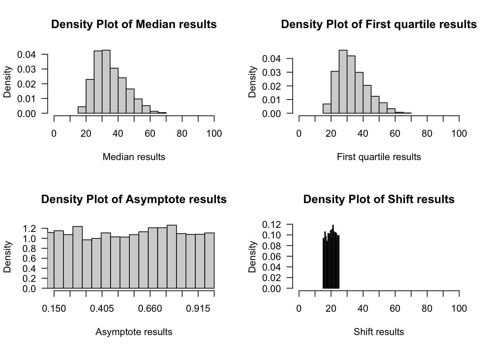
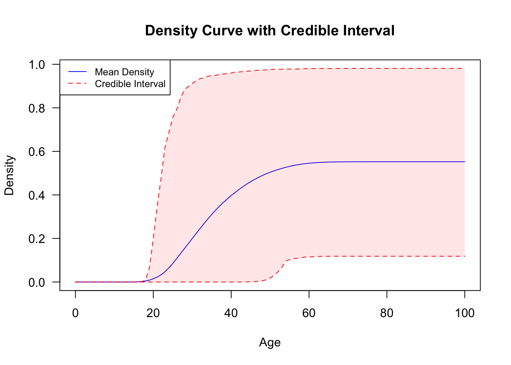
# print summary stats
out_sim_15k$summary_stats Median Shift First_Quartile Asymptote_Value
Min. :15.37 Min. :15.00 Min. :15.30 Min. :0.09926
1st Qu.:27.68 1st Qu.:17.67 1st Qu.:26.37 1st Qu.:0.32181
Median :33.59 Median :20.17 Median :31.74 Median :0.56317
Mean :35.02 Mean :20.08 Mean :33.33 Mean :0.55227
3rd Qu.:41.14 3rd Qu.:22.50 3rd Qu.:38.81 3rd Qu.:0.77319
Max. :68.50 Max. :25.00 Max. :66.43 Max. :0.99996 Results - Simulated Data - New Prior
Here I changed the prior on the asymptote to incorporate an asymptote which is skewed toward later ages.
# Exploring different priors
prior_params_91 <- list(
asymptote = list(g1 = 9, g2 = 1),
shift = list(min = 15, max = 25),
median = list(m1 = 2, m2 = 2),
first_quartile = list(q1 = 6, q2 = 3)
)
# Run Estimation procedure with default prior setting
out_sim_15k_91 <- PenEstim(
data = dat,
cancer_type = "Breast", gene_input = "BRCA1", n_chains = 4, n_iter_per_chain = 15000,
prior_params = prior_params_91, af = 0.9, burn_in = 0.1
)Rejection rates: 0.8863333 0.8832 0.884 0.8854667 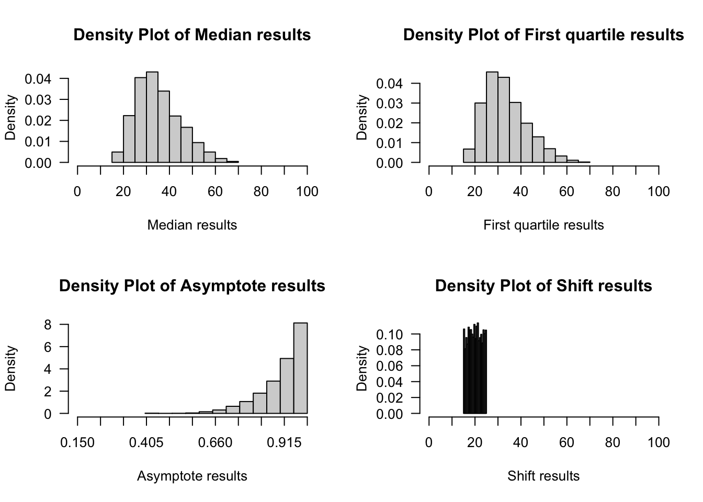
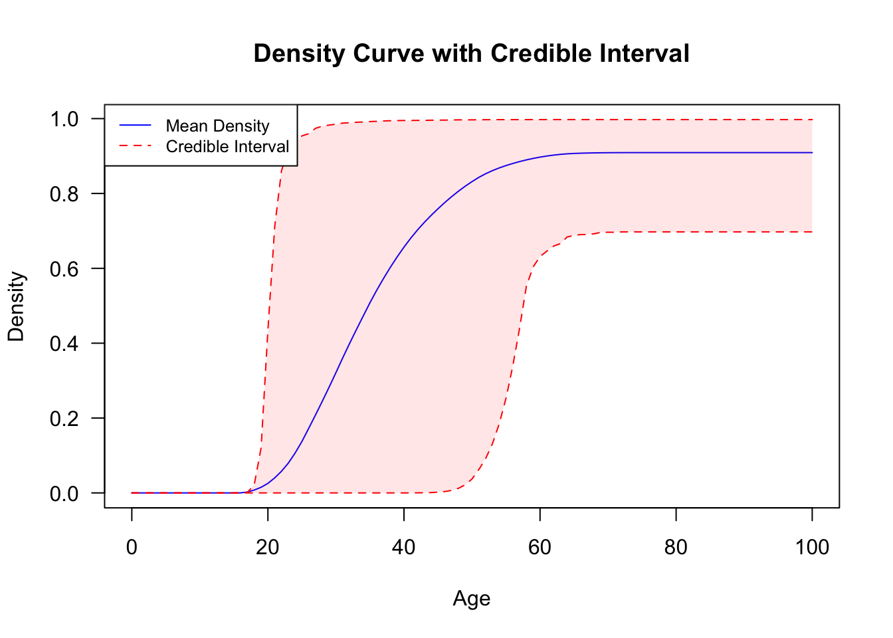
# print summary stats
out_sim_15k_91$summary_stats Median Shift First_Quartile Asymptote_Value
Min. :15.79 Min. :15.00 Min. :15.54 Min. :0.4127
1st Qu.:27.97 1st Qu.:17.63 1st Qu.:26.62 1st Qu.:0.8710
Median :33.90 Median :20.02 Median :32.03 Median :0.9329
Mean :35.12 Mean :20.03 Mean :33.41 Mean :0.9092
3rd Qu.:41.13 3rd Qu.:22.50 3rd Qu.:39.05 3rd Qu.:0.9721
Max. :67.64 Max. :25.00 Max. :65.19 Max. :1.0000 plot_traceSingle(out_sim_15k_91$results[[1]])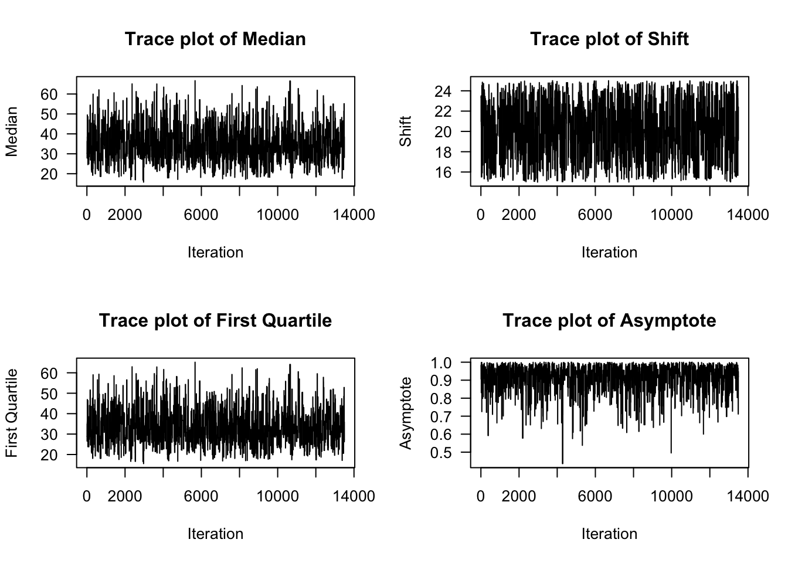
# Plot the running mean
runFQ<- running_mean(out_sim_15k_91$results[[1]]$first_quartile_samples)
runMed <- running_mean(out_sim_15k_91$results[[1]]$median_samples)
runShift <- running_mean(out_sim_15k_91$results[[1]]$shift_samples)
runAsy <- running_mean(out_sim_15k_91$results[[1]]$asymptote_samples)
# Plot running mean
plot(runFQ, type = "l", xlab = "Iteration", ylab = "Running Mean", main = "Running Mean of First Quartile Samples")
plot(runMed, type = "l", xlab = "Iteration", ylab = "Running Mean", main = "Running Mean of Median Samples")
plot(runShift, type = "l", xlab = "Iteration", ylab = "Running Mean", main = "Running Mean of Shift Samples")
plot(runAsy, type = "l", xlab = "Iteration", ylab = "Running Mean", main = "Running Mean of Asymptote Samples")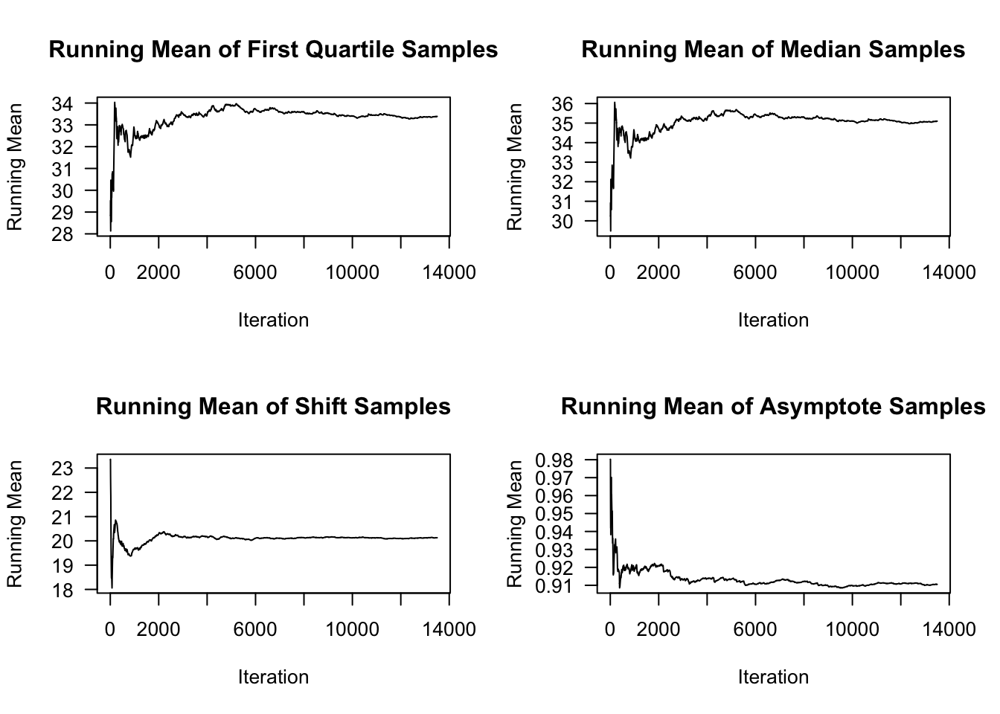
# Plot the running var
runVFQ<- running_variance(out_sim_15k_91$results[[1]]$first_quartile_samples)
runVMed <- running_variance(out_sim_15k_91$results[[1]]$median_samples)
runVShift <- running_variance(out_sim_15k_91$results[[1]]$shift_samples)
runVAsy <- running_variance(out_sim_15k_91$results[[1]]$asymptote_samples)
# Plot running var
plot(runVFQ, type = "l", xlab = "Iteration", ylab = "Running Mean", main = "Running Var of First Quartile Samples")
plot(runVMed, type = "l", xlab = "Iteration", ylab = "Running Mean", main = "Running Var of Median Samples")
plot(runVShift, type = "l", xlab = "Iteration", ylab = "Running Mean", main = "Running Var of Shift Samples")
plot(runVAsy, type = "l", xlab = "Iteration", ylab = "Running Mean", main = "Running Var of Asymptote Samples")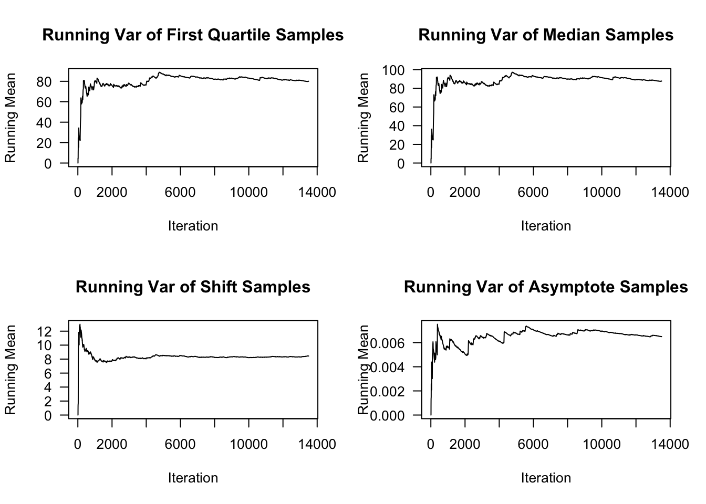
# Autocorrelation plots
acf(out_sim_15k_91$results[[1]]$first_quartile_samples, main = "ACF of First Quartile")
acf(out_sim_15k_91$results[[1]]$median_samples, main = "ACF of Median")
acf(out_sim_15k_91$results[[1]]$shift_samples, main = "ACF of Shift")
acf(out_sim_15k_91$results[[1]]$asymptote_samples, main = "ACF of Asymptote")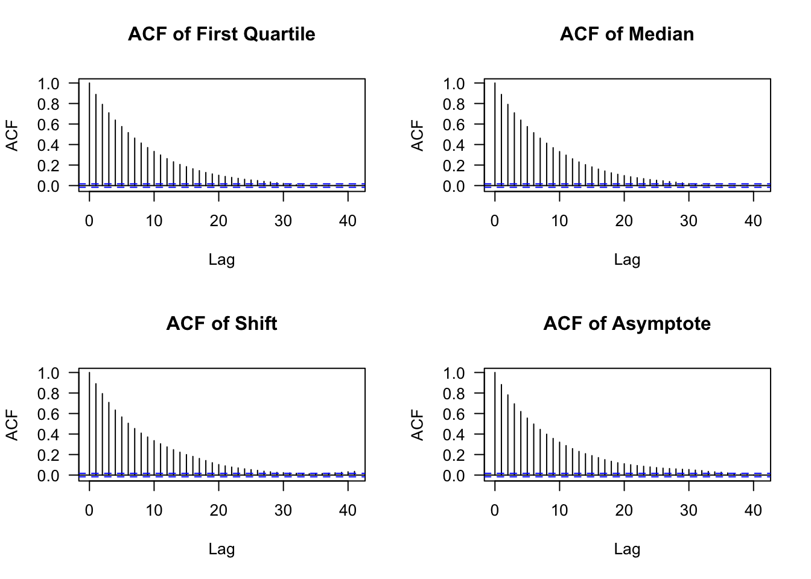
Application - CoH Data
- MSH6 and Colorectal Cancer
load("/Users/nicolaskubista/Dropbox (Partners HealthCare)/CCGCRN Hispanic Cohort Data/PenEstim/Data/carrierProbandFamilies_cohPedigree_MSH6_COL.RData")
describeFamilies(carrierProbandFamilies_cohPedigree_MSH6_COL,"Colorectal","MSH6")[1] "Number of families: 39"
[1] "Total Individuals: 1495"
[1] "Average family size: 38.3333333333333"
[1] "Summary of family sizes"
Min. 1st Qu. Median Mean 3rd Qu. Max.
7.00 25.50 36.00 38.33 43.50 79.00
[1] "Summary of Current Age for all family members"
Min. 1st Qu. Median Mean 3rd Qu. Max. NA's
1.00 35.00 54.00 51.71 70.00 94.00 606
[1] "Summary of Current Age for probands"
Min. 1st Qu. Median Mean 3rd Qu. Max. NA's
28.00 40.75 48.50 49.89 59.00 71.00 1
[1] "Number of families with affected individuals (Colorectal): 30"
[1] "Number of families with affected probands (Colorectal): 13"
[1] "Number of families with affected female probands (Colorectal): 10"
[1] "Number of families with relatives with PV (and not the proband) (MSH6): 11"
[1] "Number of probands with PV (MSH6): 39"
[1] "Number of female probands with PV (MSH6): 31"
[1] "Number of individuals with PV (MSH6): 16"
[1] "Summary of Cancer Age of (female) probands"
Min. 1st Qu. Median Mean 3rd Qu. Max. NA's
30.00 44.25 51.00 50.00 57.50 67.00 21
[1] "Summary of Cancer Age in affected (non-proband) individuals"
Min. 1st Qu. Median Mean 3rd Qu. Max. NA's
35.00 52.00 60.00 59.55 68.00 92.00 14
[1] "Summary of Cancer Age in affected (non-proband) female individuals"
Min. 1st Qu. Median Mean 3rd Qu. Max. NA's
28.00 40.00 49.00 48.13 56.00 67.00 1 # Exploring different priors
prior_params_MSH6 <- list(
asymptote = list(g1 = 1, g2 = 1),
shift = list(min = 0, max = 25),
median = list(m1 = 1, m2 = 1),
first_quartile = list(q1 = 6, q2 = 3)
)
# Run Estimation procedure with default prior setting
out_sim_15k_MSH6 <- PenEstim(
data = carrierProbandFamilies_cohPedigree_MSH6_COL,
cancer_type = "Colorectal", gene_input = "MSH6", n_chains = 4, n_iter_per_chain = 15000,
prior_params = prior_params_MSH6,
af = PanelPRODatabase$AlleleFrequency[["MSH6_anyPV",1]], burn_in = 0.1
)Warning in PenEstim(data = carrierProbandFamilies_cohPedigree_MSH6_COL, : Low
acceptance rate. Please consider running the chain longer.Rejection rates: 0.9190667 0.9184667 0.9156667 0.9189333 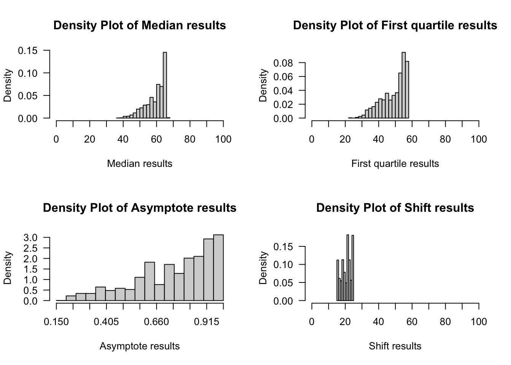
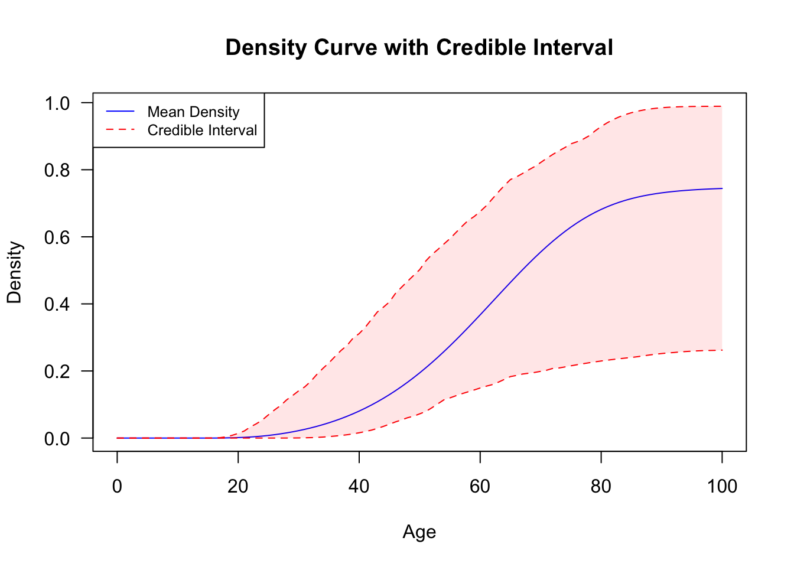
# print summary stats
out_sim_15k_MSH6$summary_stats Median Shift First_Quartile Asymptote_Value
Min. : 0.1004 Min. : 0.006679 Min. : 0.08037 Min. :0.07275
1st Qu.:12.6328 1st Qu.: 5.998516 1st Qu.:11.74796 1st Qu.:0.30398
Median :19.5277 Median :11.924618 Median :18.58181 Median :0.53870
Mean :19.9654 Mean :12.156192 Mean :19.05335 Mean :0.53798
3rd Qu.:25.8206 3rd Qu.:18.214065 3rd Qu.:24.94265 3rd Qu.:0.76411
Max. :62.1598 Max. :24.996555 Max. :61.64862 Max. :0.99992 plot_traceSingle(out_sim_15k_MSH6$results[[1]])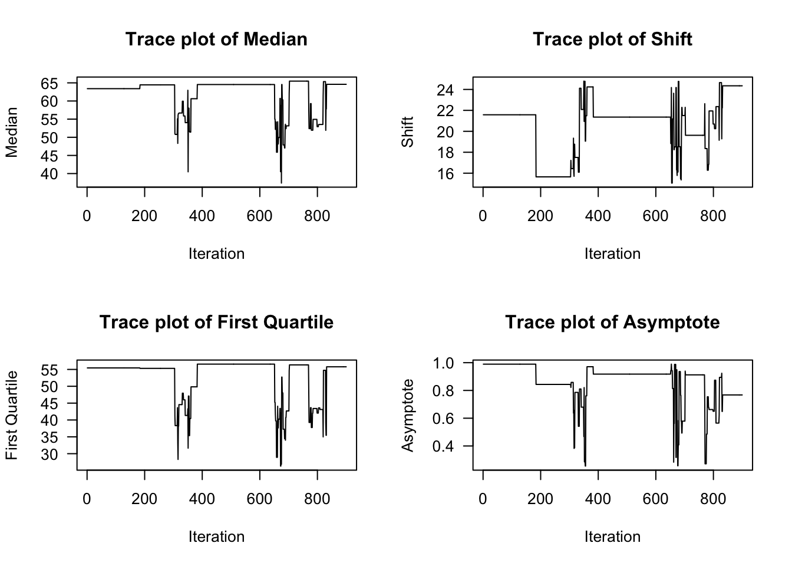
# Plot the running mean
runFQ<- running_mean(out_sim_15k_MSH6$results[[1]]$first_quartile_samples)
runMed <- running_mean(out_sim_15k_MSH6$results[[1]]$median_samples)
runShift <- running_mean(out_sim_15k_MSH6$results[[1]]$shift_samples)
runAsy <- running_mean(out_sim_15k_MSH6$results[[1]]$asymptote_samples)
# Plot running mean
plot(runFQ, type = "l", xlab = "Iteration", ylab = "Running Mean", main = "Running Mean of First Quartile Samples")
plot(runMed, type = "l", xlab = "Iteration", ylab = "Running Mean", main = "Running Mean of Median Samples")
plot(runShift, type = "l", xlab = "Iteration", ylab = "Running Mean", main = "Running Mean of Shift Samples")
plot(runAsy, type = "l", xlab = "Iteration", ylab = "Running Mean", main = "Running Mean of Asymptote Samples")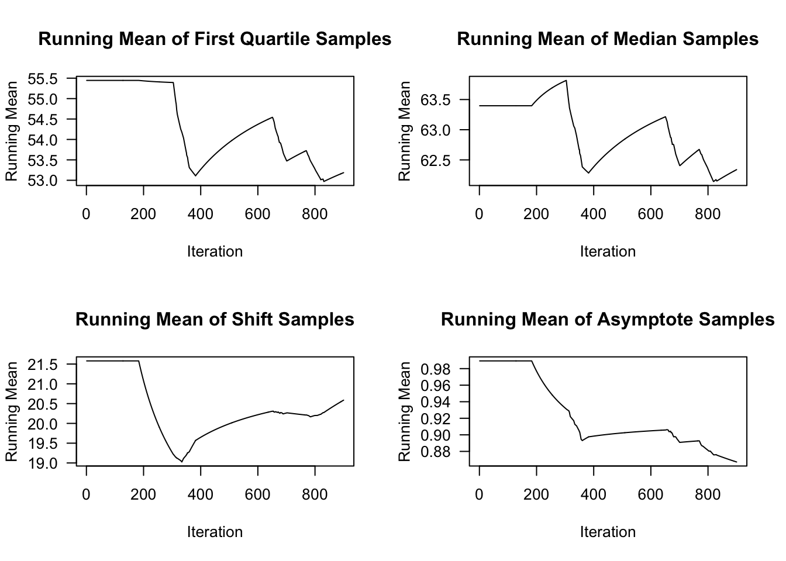
# Plot the running var
runVFQ<- running_variance(out_sim_15k_MSH6$results[[1]]$first_quartile_samples)
runVMed <- running_variance(out_sim_15k_MSH6$results[[1]]$median_samples)
runVShift <- running_variance(out_sim_15k_MSH6$results[[1]]$shift_samples)
runVAsy <- running_variance(out_sim_15k_MSH6$results[[1]]$asymptote_samples)
# Plot running var
plot(runVFQ, type = "l", xlab = "Iteration", ylab = "Running Mean", main = "Running Var of First Quartile Samples")
plot(runVMed, type = "l", xlab = "Iteration", ylab = "Running Mean", main = "Running Var of Median Samples")
plot(runVShift, type = "l", xlab = "Iteration", ylab = "Running Mean", main = "Running Var of Shift Samples")
plot(runVAsy, type = "l", xlab = "Iteration", ylab = "Running Mean", main = "Running Var of Asymptote Samples")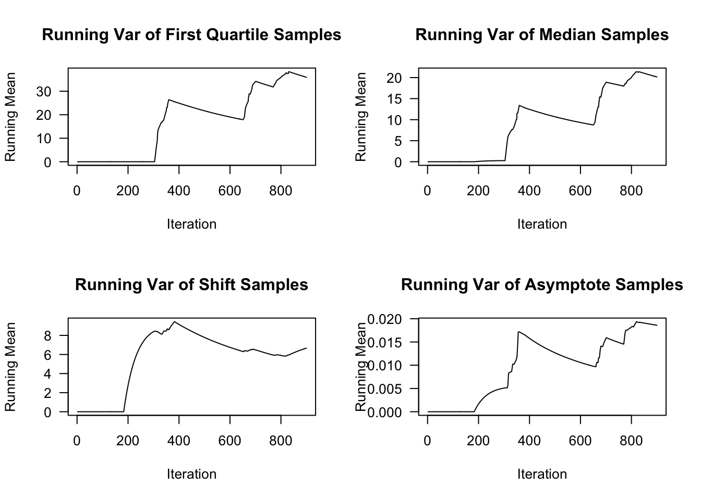
# Autocorrelation plots
acf(out_sim_15k_MSH6$results[[1]]$first_quartile_samples, main = "ACF of First Quartile")
acf(out_sim_15k_MSH6$results[[1]]$median_samples, main = "ACF of Median")
acf(out_sim_15k_MSH6$results[[1]]$shift_samples, main = "ACF of Shift")
acf(out_sim_15k_MSH6$results[[1]]$asymptote_samples, main = "ACF of Asymptote")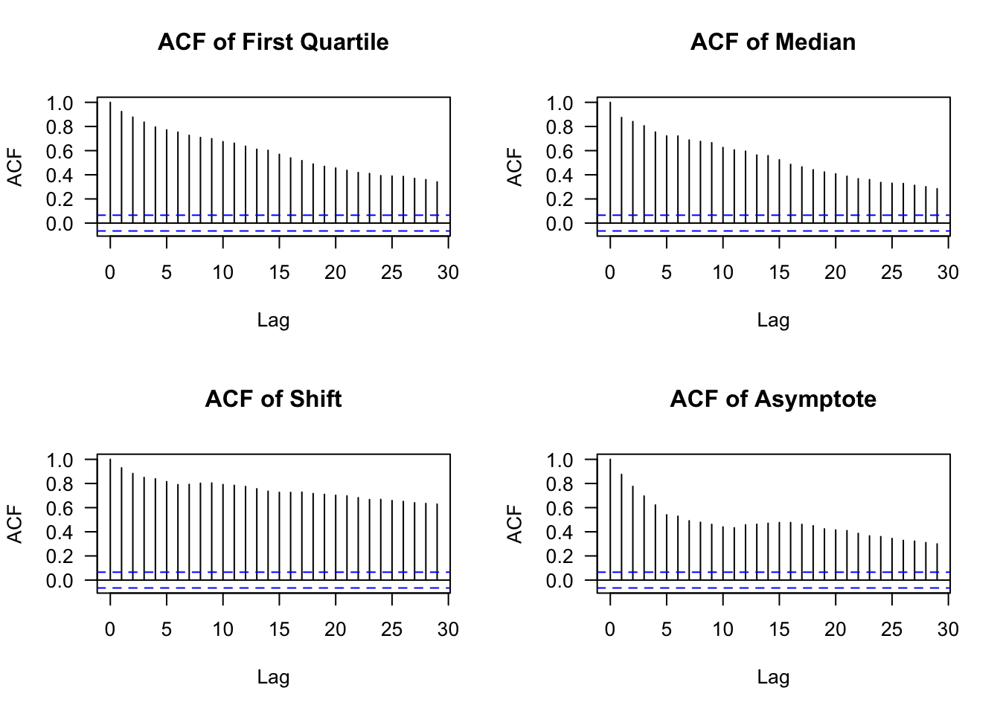
- MLH1 and Colorectal Cancer
load("/Users/nicolaskubista/Dropbox (Partners HealthCare)/CCGCRN Hispanic Cohort Data/PenEstim/Data/carrierProbandFamilies_cohPedigree_MLH1.RData")
describeFamilies(carrierProbandFamilies_cohPedigree_MLH1,"Colorectal","MLH1")[1] "Number of families: 130"
[1] "Total Individuals: 4551"
[1] "Average family size: 35.0076923076923"
[1] "Summary of family sizes"
Min. 1st Qu. Median Mean 3rd Qu. Max.
7.00 23.25 33.50 35.01 43.00 89.00
[1] "Summary of Current Age for all family members"
Min. 1st Qu. Median Mean 3rd Qu. Max. NA's
1.0 25.0 43.0 43.8 62.0 94.0 1427
[1] "Summary of Current Age for probands"
Min. 1st Qu. Median Mean 3rd Qu. Max. NA's
16.00 38.00 45.00 45.84 55.00 85.00 1
[1] "Number of families with affected individuals (Colorectal): 109"
[1] "Number of families with affected probands (Colorectal): 83"
[1] "Number of families with affected female probands (Colorectal): 46"
[1] "Number of families with relatives with PV (and not the proband) (MLH1): 34"
[1] "Number of probands with PV (MLH1): 130"
[1] "Number of female probands with PV (MLH1): 79"
[1] "Number of individuals with PV (MLH1): 108"
[1] "Summary of Cancer Age of (female) probands"
Min. 1st Qu. Median Mean 3rd Qu. Max. NA's
26.00 37.25 41.50 43.83 51.50 75.00 33
[1] "Summary of Cancer Age in affected (non-proband) individuals"
Min. 1st Qu. Median Mean 3rd Qu. Max. NA's
1.00 36.00 46.00 46.31 55.25 92.00 87
[1] "Summary of Cancer Age in affected (non-proband) female individuals"
Min. 1st Qu. Median Mean 3rd Qu. Max. NA's
24.00 35.00 41.00 41.73 48.00 75.00 3 # Exploring different priors
prior_params_MLH1 <- list(
asymptote = list(g1 = 1, g2 = 1),
shift = list(min = 0, max = 30),
median = list(m1 = 2, m2 = 2),
first_quartile = list(q1 = 6, q2 = 3)
)
# Run Estimation procedure with default prior setting
out_sim_15k_MLH1 <- PenEstim(
data = carrierProbandFamilies_cohPedigree_MLH1,
cancer_type = "Colorectal", gene_input = "MLH1", n_chains = 4, n_iter_per_chain = 15000,
prior_params = prior_params_MLH1,
af = PanelPRODatabase$AlleleFrequency[["MLH1_anyPV",1]], burn_in = 0.1
)Rejection rates: 0.7559333 0.7624667 0.7488667 0.75 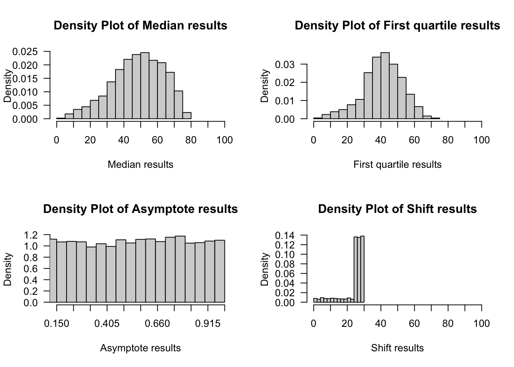
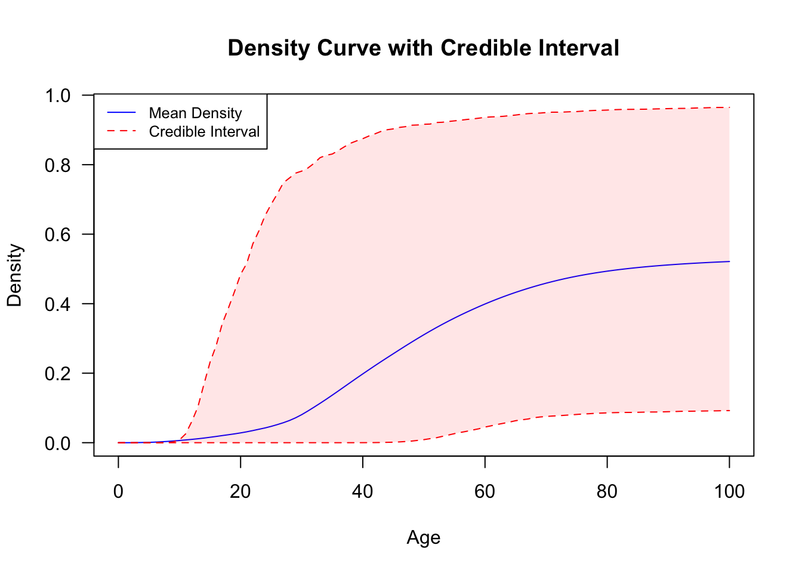
# print summary stats
out_sim_15k_MLH1$summary_stats Median Shift First_Quartile Asymptote_Value
Min. : 1.40 Min. : 0.008923 Min. : 1.213 Min. :0.07262
1st Qu.:38.08 1st Qu.:24.495563 1st Qu.:34.206 1st Qu.:0.30547
Median :49.40 Median :26.319476 Median :41.461 Median :0.54581
Mean :48.24 Mean :24.238360 Mean :40.939 Mean :0.54041
3rd Qu.:60.16 3rd Qu.:28.197738 3rd Qu.:49.014 3rd Qu.:0.77291
Max. :78.92 Max. :29.999000 Max. :74.311 Max. :0.99998 plot_traceSingle(out_sim_15k_MLH1$results[[1]])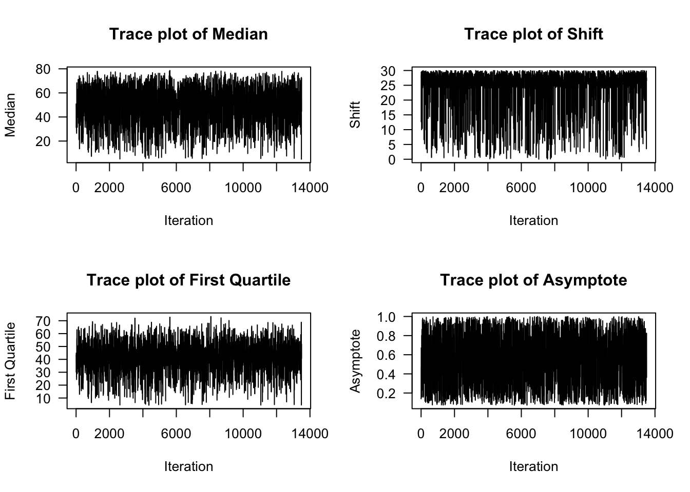
# Plot the running mean
runFQ<- running_mean(out_sim_15k_MLH1$results[[1]]$first_quartile_samples)
runMed <- running_mean(out_sim_15k_MLH1$results[[1]]$median_samples)
runShift <- running_mean(out_sim_15k_MLH1$results[[1]]$shift_samples)
runAsy <- running_mean(out_sim_15k_MLH1$results[[1]]$asymptote_samples)
# Plot running mean
plot(runFQ, type = "l", xlab = "Iteration", ylab = "Running Mean", main = "Running Mean of First Quartile Samples")
plot(runMed, type = "l", xlab = "Iteration", ylab = "Running Mean", main = "Running Mean of Median Samples")
plot(runShift, type = "l", xlab = "Iteration", ylab = "Running Mean", main = "Running Mean of Shift Samples")
plot(runAsy, type = "l", xlab = "Iteration", ylab = "Running Mean", main = "Running Mean of Asymptote Samples")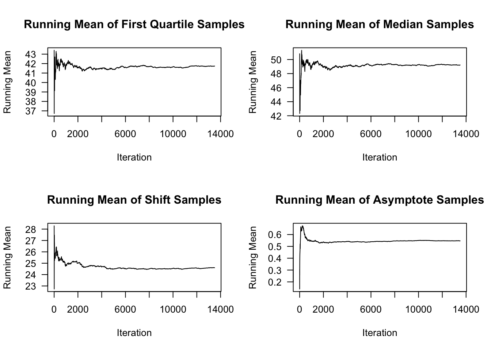
# Plot the running var
runVFQ<- running_variance(out_sim_15k_MLH1$results[[1]]$first_quartile_samples)
runVMed <- running_variance(out_sim_15k_MLH1$results[[1]]$median_samples)
runVShift <- running_variance(out_sim_15k_MLH1$results[[1]]$shift_samples)
runVAsy <- running_variance(out_sim_15k_MLH1$results[[1]]$asymptote_samples)
# Plot running var
plot(runVFQ, type = "l", xlab = "Iteration", ylab = "Running Mean", main = "Running Var of First Quartile Samples")
plot(runVMed, type = "l", xlab = "Iteration", ylab = "Running Mean", main = "Running Var of Median Samples")
plot(runVShift, type = "l", xlab = "Iteration", ylab = "Running Mean", main = "Running Var of Shift Samples")
plot(runVAsy, type = "l", xlab = "Iteration", ylab = "Running Mean", main = "Running Var of Asymptote Samples")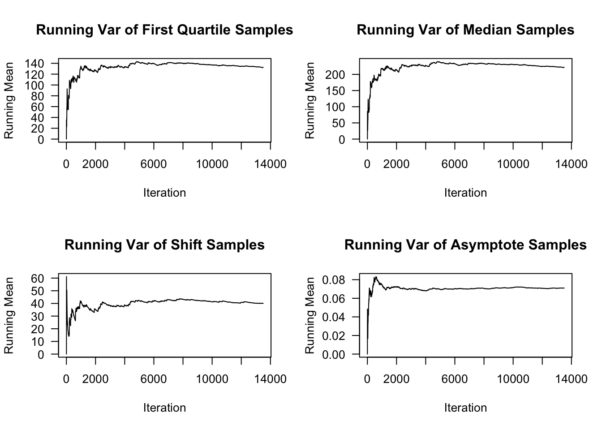
# Autocorrelation plots
acf(out_sim_15k_MLH1$results[[1]]$first_quartile_samples, main = "ACF of First Quartile")
acf(out_sim_15k_MLH1$results[[1]]$median_samples, main = "ACF of Median")
acf(out_sim_15k_MLH1$results[[1]]$shift_samples, main = "ACF of Shift")
acf(out_sim_15k_MLH1$results[[1]]$asymptote_samples, main = "ACF of Asymptote")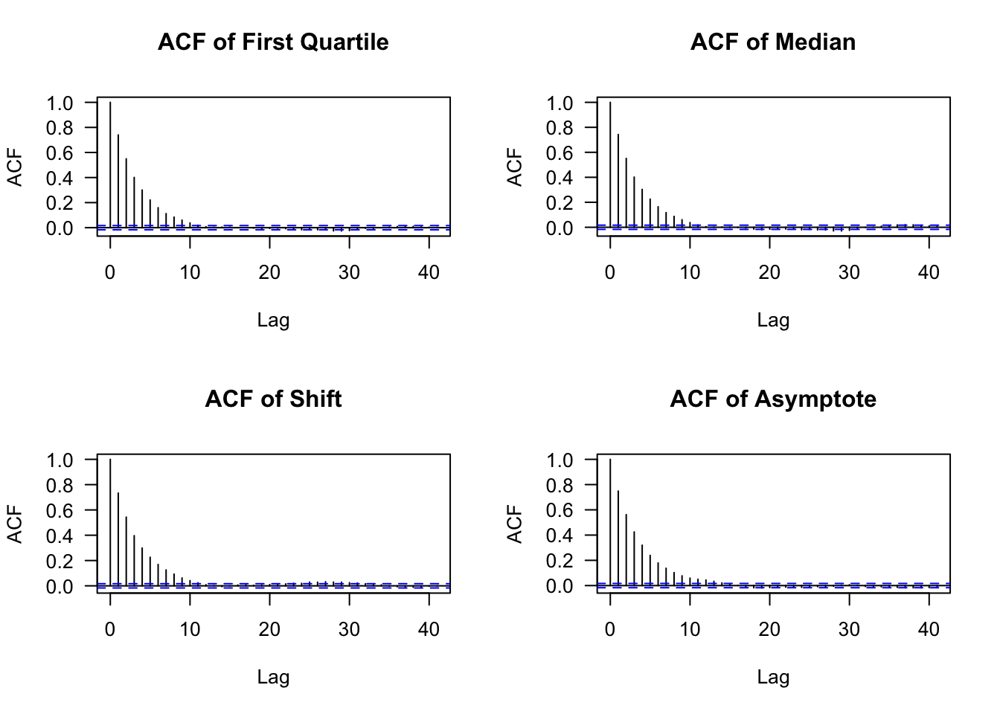
Penetrance Estimates from PanelPRO
As a reference, I added the penetrance curves for the respective gene-cancer combinations from the PanelPRODatabase here.
db <- PPP::PanelPRODatabase
ages <- 1:94
# Extracting penetrance data for females
pen1_f <- cumsum(db$Penetrance["Breast", "BRCA1_hetero_anyPV", "All_Races", "Female", ,"Net"])
# Assuming similar structure, extracting for males (modify according to your data structure)
pen1_m <- cumsum(db$Penetrance["Breast", "BRCA1_hetero_anyPV", "All_Races", "Male", ,"Net"])
# Plot for BRCA1 and Breast Cancer including both genders
plot(ages, pen1_f, type="l", lwd=2, col="blue",
xlab="Age", ylab="Cumulative Penetrance",
main="BRCA1 and Breast Cancer")
lines(ages, pen1_m, type="l", lwd=2, col="red")
legend("topleft", legend=c("Female", "Male"), col=c("blue", "red"), lty=1, lwd=2)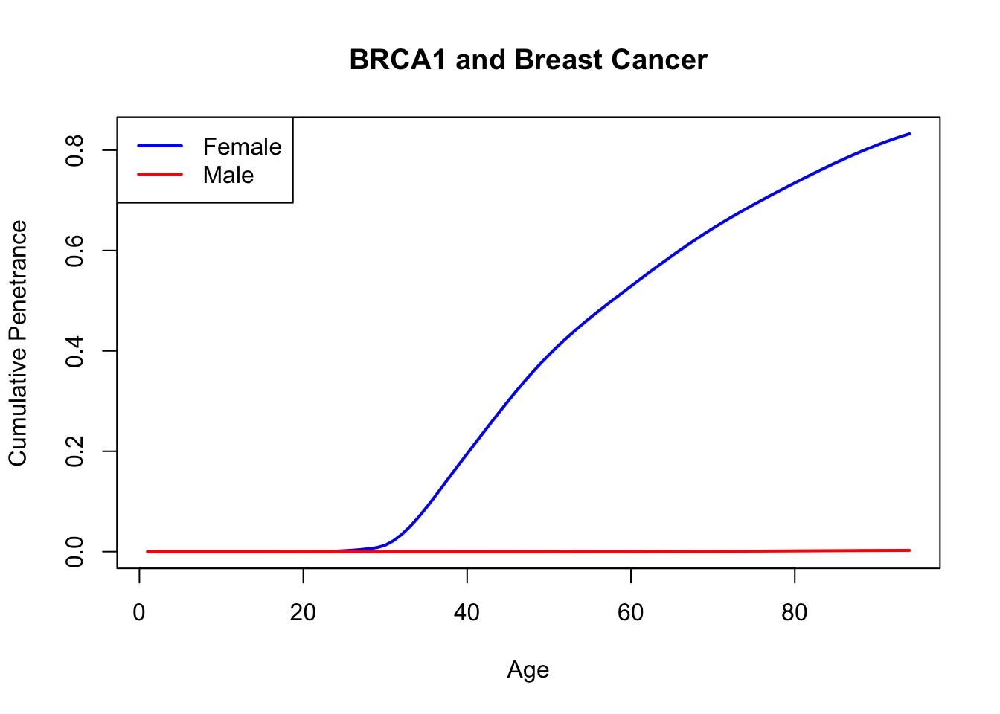
# MLH1 and Colorectal Cancer for both genders
pen2_f <- cumsum(db$Penetrance["Colorectal", "MLH1_hetero_anyPV", "All_Races", "Female", ,"Net"])
pen2_m <- cumsum(db$Penetrance["Colorectal", "MLH1_hetero_anyPV", "All_Races", "Male", ,"Net"])
# Plot for MLH1 and Colorectal Cancer
plot(ages, pen2_f, type="l", lwd=2, col="blue",
xlab="Age", ylab="Cumulative Penetrance",
main="MLH1 and Colorectal Cancer")
lines(ages, pen2_m, type="l", lwd=2, col="red")
legend("topleft", legend=c("Female", "Male"), col=c("blue", "red"), lty=1, lwd=2)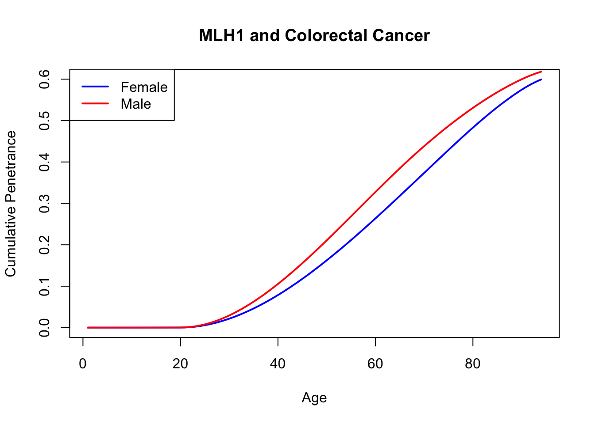
# MSH6 and Colorectal Cancer for both genders
pen3_f <- cumsum(db$Penetrance["Colorectal", "MSH6_hetero_anyPV", "All_Races", "Female", ,"Net"])
pen3_m <- cumsum(db$Penetrance["Colorectal", "MSH6_hetero_anyPV", "All_Races", "Male", ,"Net"])
# Plot for MSH6 and Colorectal Cancer
plot(ages, pen3_f, type="l", lwd=2, col="blue",
xlab="Age", ylab="Cumulative Penetrance",
main="MSH6 and Colorectal Cancer")
lines(ages, pen3_m, type="l", lwd=2, col="red")
legend("topleft", legend=c("Female", "Male"), col=c("blue", "red"), lty=1, lwd=2)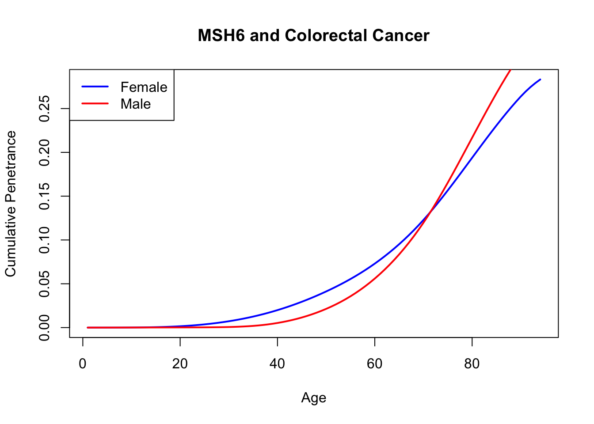
- Colorectal and MSH6 with new prior
# Exploring different priors
prior_params_MSH6 <- list(
asymptote = list(g1 = 1, g2 = 1),
shift = list(min = 0, max = 25),
median = list(m1 = 8, m2 = 2), # this is new
first_quartile = list(q1 = 6, q2 = 3)
)
# New
out_sim_10k_MSH6_newPriorMP <- PenEstim(
data = carrierProbandFamilies_cohPedigree_MSH6_COL,
cancer_type = "Colorectal", gene_input = "MSH6", n_chains = 4, n_iter_per_chain = 10000, median_max = FALSE,
prior_params = prior_params_MSH6, max_penetrance =1,
af = PanelPRODatabase$AlleleFrequency[["MSH6_anyPV",1]], burn_in = 0.1
)Warning in PenEstim(data = carrierProbandFamilies_cohPedigree_MSH6_COL, : Low
acceptance rate. Please consider running the chain longer.Rejection rates: 0.9984 0.998 0.9976 0.9985 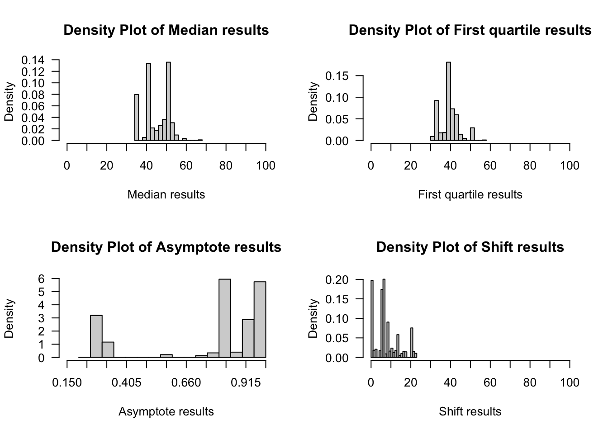

# print summary stats
out_sim_10k_MSH6_newPriorMP$summary_stats Median Shift First_Quartile Asymptote_Value
Min. :35.56 Min. : 0.04886 Min. :31.63 Min. :0.2085
1st Qu.:41.43 1st Qu.: 4.34838 1st Qu.:36.50 1st Qu.:0.7994
Median :44.20 Median : 6.17387 Median :39.77 Median :0.8385
Mean :45.26 Mean : 7.77524 Mean :39.44 Mean :0.7618
3rd Qu.:51.43 3rd Qu.:10.64260 3rd Qu.:41.73 3rd Qu.:0.9619
Max. :67.80 Max. :22.49311 Max. :57.73 Max. :1.0000 plot_traceSingle(out_sim_10k_MSH6_newPriorMP$results[[1]])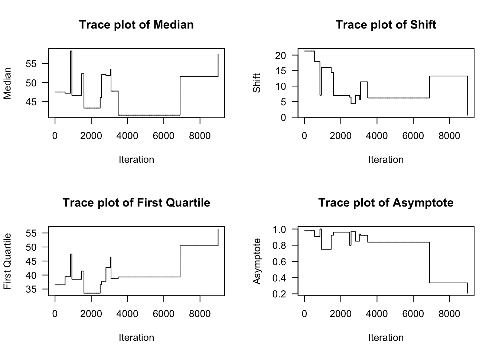
plot_penetrance(out_sim_10k_MSH6_newPriorMP$combined_chains)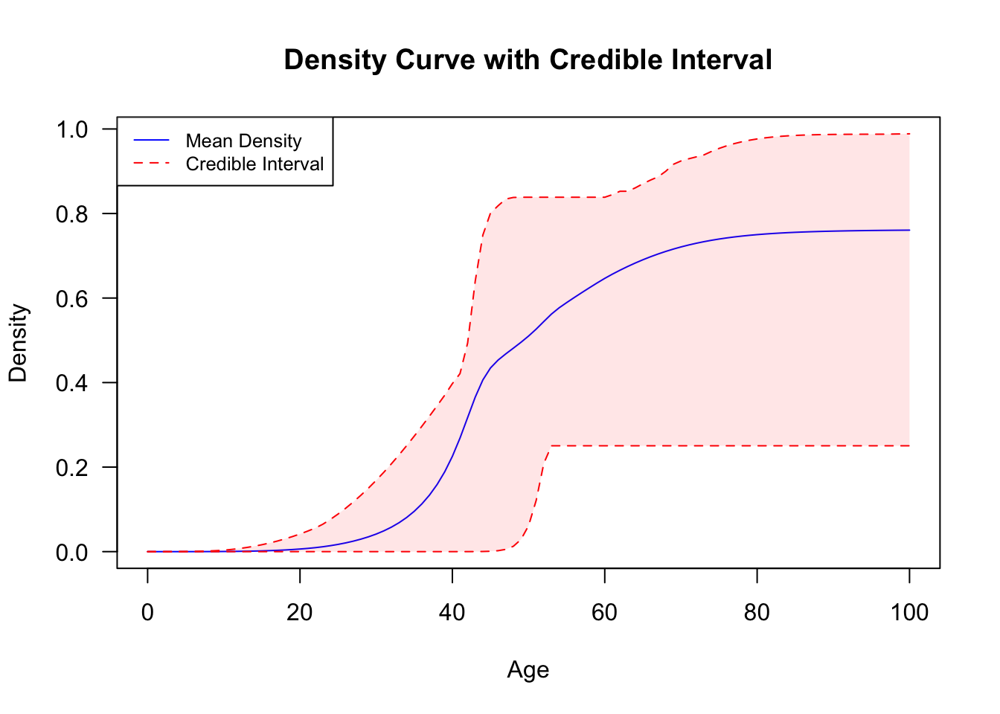
generate_density_plots(out_sim_10k_MSH6_newPriorMP$combined_chains)
# Plot the running mean
runFQ<- running_mean(out_sim_10k_MSH6_newPriorMP$results[[1]]$first_quartile_samples)
runMed <- running_mean(out_sim_10k_MSH6_newPriorMP$results[[1]]$median_samples)
runShift <- running_mean(out_sim_10k_MSH6_newPriorMP$results[[1]]$shift_samples)
runAsy <- running_mean(out_sim_10k_MSH6_newPriorMP$results[[1]]$asymptote_samples)
# Plot running mean
plot(runFQ, type = "l", xlab = "Iteration", ylab = "Running Mean", main = "Running Mean of First Quartile Samples")
plot(runMed, type = "l", xlab = "Iteration", ylab = "Running Mean", main = "Running Mean of Median Samples")
plot(runShift, type = "l", xlab = "Iteration", ylab = "Running Mean", main = "Running Mean of Shift Samples")
plot(runAsy, type = "l", xlab = "Iteration", ylab = "Running Mean", main = "Running Mean of Asymptote Samples")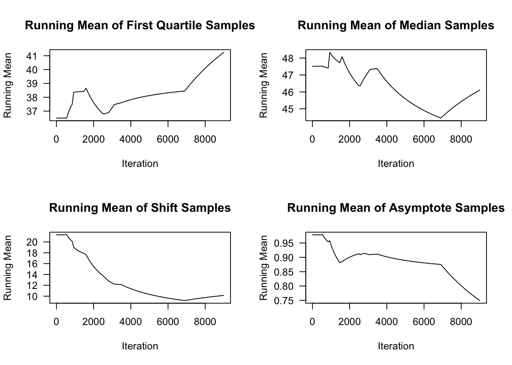
# Plot the running var
runVFQ<- running_variance(out_sim_10k_MSH6_newPriorMP$results[[1]]$first_quartile_samples)
runVMed <- running_variance(out_sim_10k_MSH6_newPriorMP$results[[1]]$median_samples)
runVShift <- running_variance(out_sim_10k_MSH6_newPriorMP$results[[1]]$shift_samples)
runVAsy <- running_variance(out_sim_10k_MSH6_newPriorMP$results[[1]]$asymptote_samples)
# Plot running var
plot(runVFQ, type = "l", xlab = "Iteration", ylab = "Running Mean", main = "Running Var of First Quartile Samples")
plot(runVMed, type = "l", xlab = "Iteration", ylab = "Running Mean", main = "Running Var of Median Samples")
plot(runVShift, type = "l", xlab = "Iteration", ylab = "Running Mean", main = "Running Var of Shift Samples")
plot(runVAsy, type = "l", xlab = "Iteration", ylab = "Running Mean", main = "Running Var of Asymptote Samples")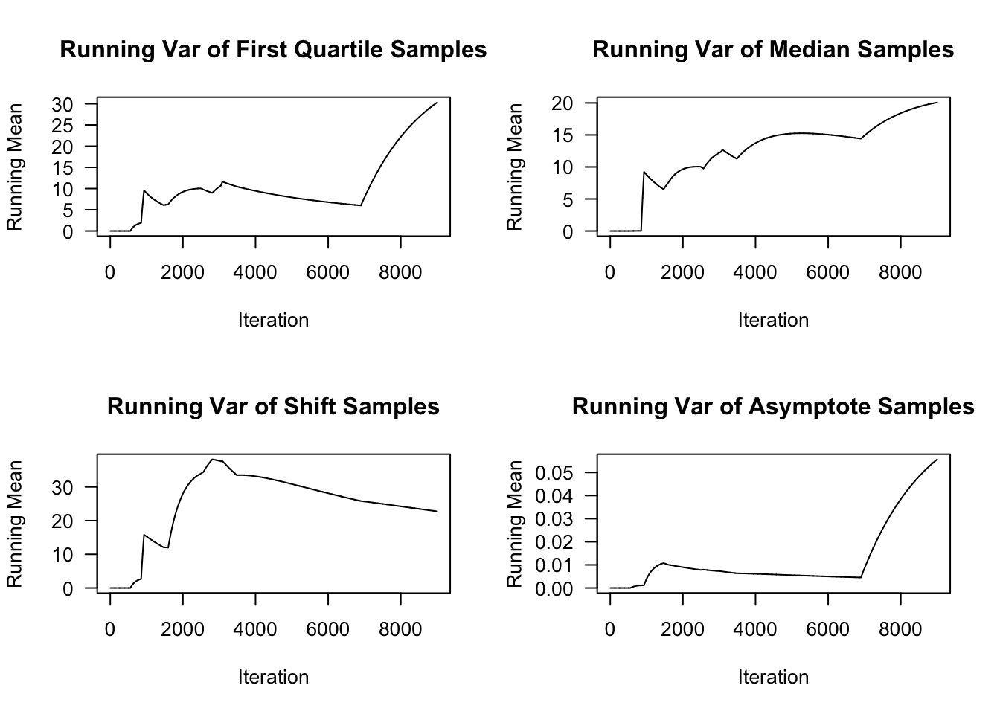
# Autocorrelation plots
acf(out_sim_10k_MSH6_newPriorMP$results[[1]]$first_quartile_samples, main = "ACF of First Quartile")
acf(out_sim_10k_MSH6_newPriorMP$results[[1]]$median_samples, main = "ACF of Median")
acf(out_sim_10k_MSH6_newPriorMP$results[[1]]$shift_samples, main = "ACF of Shift")
acf(out_sim_10k_MSH6_newPriorMP$results[[1]]$asymptote_samples, main = "ACF of Asymptote")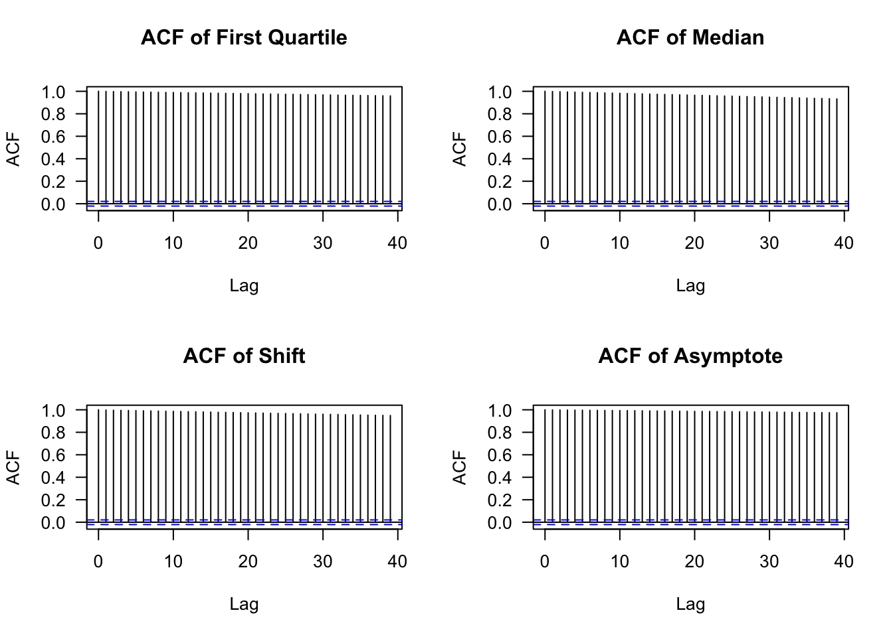
# plot the scatterplot with the median and first quartile
plot(out_sim_10k_MSH6_newPriorMP$combined_chains$median_results, out_sim_10k_MSH6_newPriorMP$combined_chains$first_quartile_results, xlim = c(1,100), ylim = c(1,100))
abline(a=0, b=1, col="red") # This draws a red line with slope 1 passing through the origin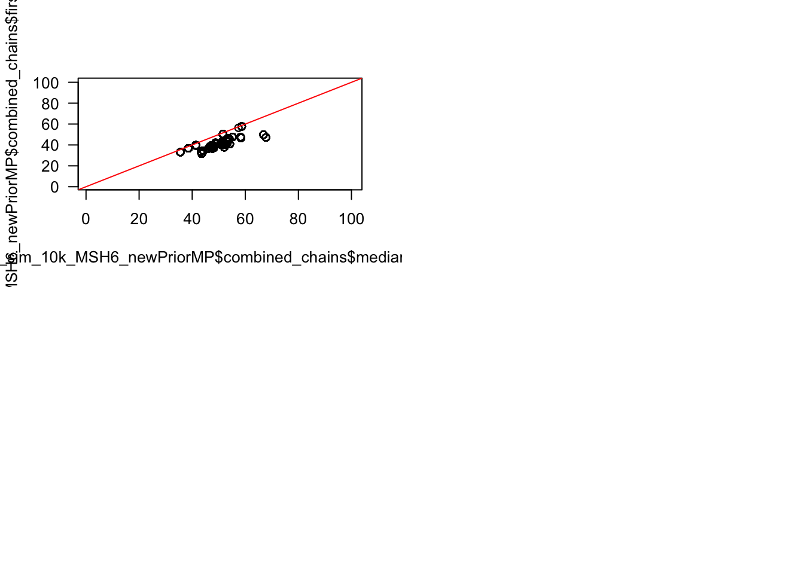
MSH6 and Colorectal
New Prior
more itterations
# Exploring different priors
prior_params_MSH6_2 <- list(
asymptote = list(g1 = 1, g2 = 1),
shift = list(min = 0, max = 40), # this is new
median = list(m1 = 6, m2 = 3), # this is new
first_quartile = list(q1 = 6, q2 = 3)
)
# New
out_sim_10k_MSH6_newPrior2MP <- PenEstim(
data = carrierProbandFamilies_cohPedigree_MSH6_COL,
cancer_type = "Colorectal", gene_input = "MSH6", n_chains = 4, n_iter_per_chain = 10000, median_max = FALSE,
prior_params = prior_params_MSH6_2, max_penetrance = 0.3,
af = PanelPRODatabase$AlleleFrequency[["MSH6_anyPV",1]], burn_in = 0.1
)Rejection rates: 0.7021 0.6963 0.709 0.7071 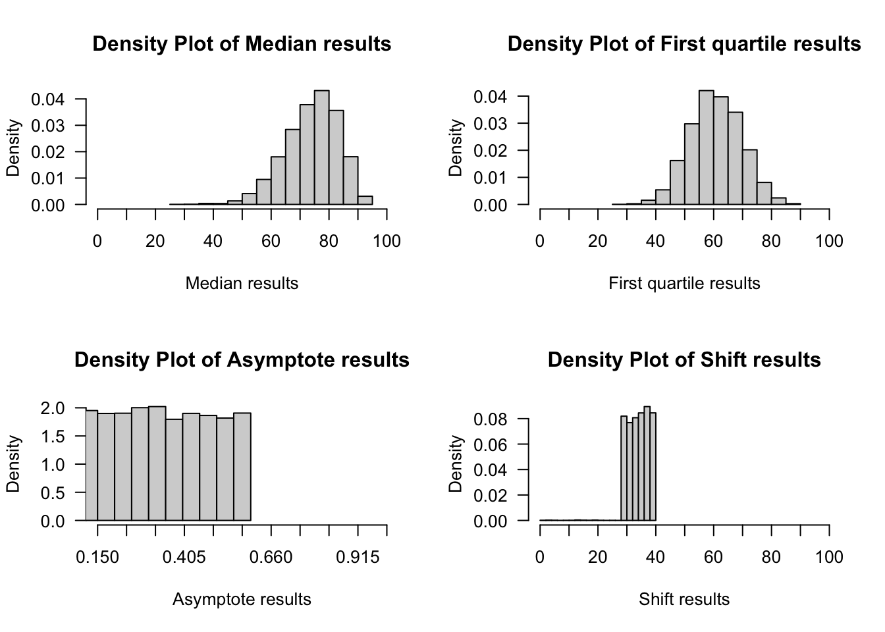

# print summary stats
out_sim_10k_MSH6_newPrior2MP$summary_stats Median Shift First_Quartile Asymptote_Value
Min. :27.63 Min. : 0.9726 Min. :25.60 Min. :0.07263
1st Qu.:68.07 1st Qu.:31.0704 1st Qu.:54.53 1st Qu.:0.20502
Median :74.99 Median :34.1910 Median :60.50 Median :0.33219
Mean :73.96 Mean :34.0183 Mean :60.73 Mean :0.33551
3rd Qu.:80.82 3rd Qu.:37.0943 3rd Qu.:66.99 3rd Qu.:0.46352
Max. :92.93 Max. :39.9998 Max. :88.63 Max. :0.59997 plot_traceSingle(out_sim_10k_MSH6_newPrior2MP$results[[1]])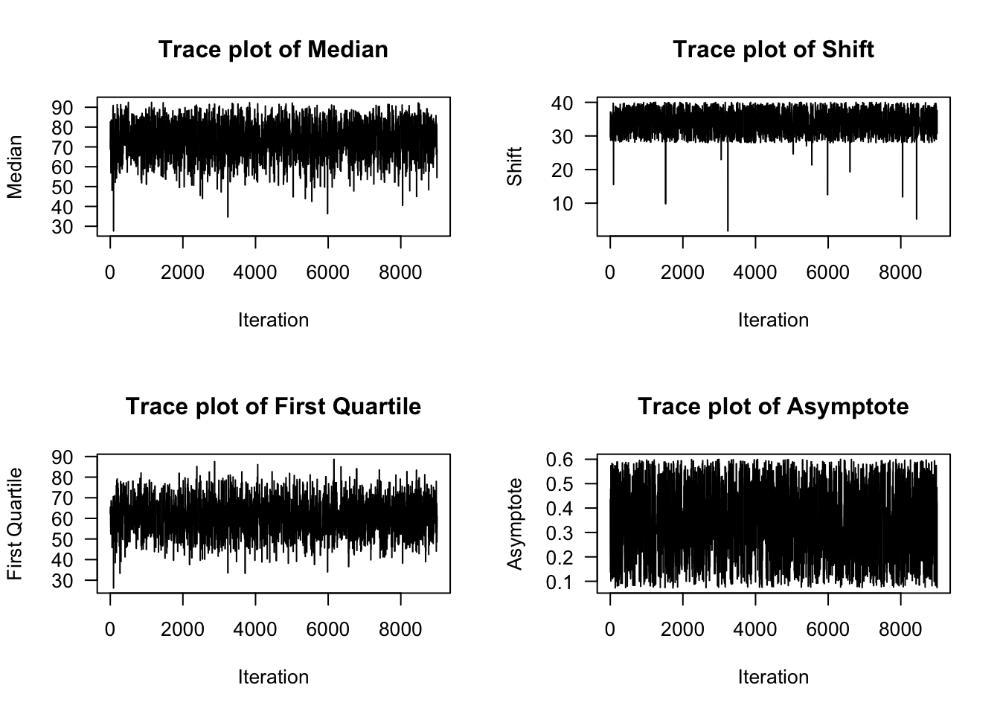
plot_penetrance(out_sim_10k_MSH6_newPrior2MP$combined_chains)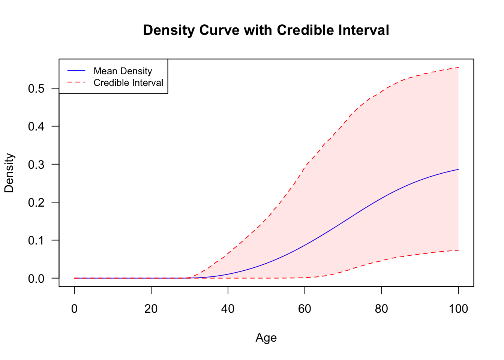
generate_density_plots(out_sim_10k_MSH6_newPrior2MP$combined_chains)
# Plot the running mean
runFQ<- running_mean(out_sim_10k_MSH6_newPrior2MP$results[[1]]$first_quartile_samples)
runMed <- running_mean(out_sim_10k_MSH6_newPrior2MP$results[[1]]$median_samples)
runShift <- running_mean(out_sim_10k_MSH6_newPrior2MP$results[[1]]$shift_samples)
runAsy <- running_mean(out_sim_10k_MSH6_newPrior2MP$results[[1]]$asymptote_samples)
# Plot running mean
plot(runFQ, type = "l", xlab = "Iteration", ylab = "Running Mean", main = "Running Mean of First Quartile Samples")
plot(runMed, type = "l", xlab = "Iteration", ylab = "Running Mean", main = "Running Mean of Median Samples")
plot(runShift, type = "l", xlab = "Iteration", ylab = "Running Mean", main = "Running Mean of Shift Samples")
plot(runAsy, type = "l", xlab = "Iteration", ylab = "Running Mean", main = "Running Mean of Asymptote Samples")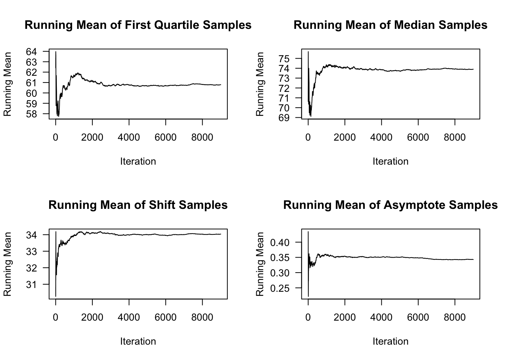
# Plot the running var
runVFQ<- running_variance(out_sim_10k_MSH6_newPrior2MP$results[[1]]$first_quartile_samples)
runVMed <- running_variance(out_sim_10k_MSH6_newPrior2MP$results[[1]]$median_samples)
runVShift <- running_variance(out_sim_10k_MSH6_newPrior2MP$results[[1]]$shift_samples)
runVAsy <- running_variance(out_sim_10k_MSH6_newPrior2MP$results[[1]]$asymptote_samples)
# Plot running var
plot(runVFQ, type = "l", xlab = "Iteration", ylab = "Running Mean", main = "Running Var of First Quartile Samples")
plot(runVMed, type = "l", xlab = "Iteration", ylab = "Running Mean", main = "Running Var of Median Samples")
plot(runVShift, type = "l", xlab = "Iteration", ylab = "Running Mean", main = "Running Var of Shift Samples")
plot(runVAsy, type = "l", xlab = "Iteration", ylab = "Running Mean", main = "Running Var of Asymptote Samples")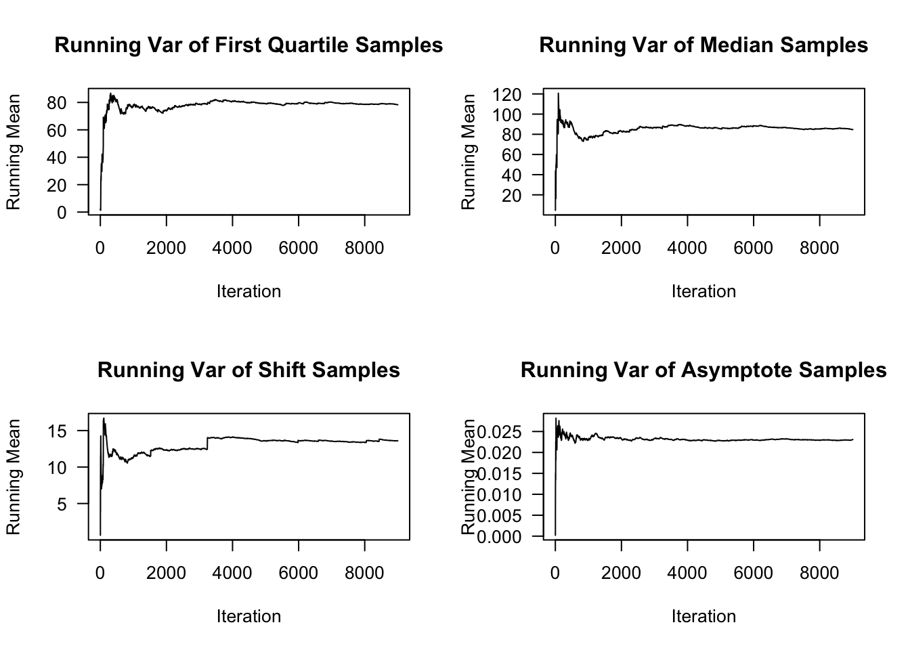
# Autocorrelation plots
acf(out_sim_10k_MSH6_newPrior2MP$results[[1]]$first_quartile_samples, main = "ACF of First Quartile")
acf(out_sim_10k_MSH6_newPrior2MP$results[[1]]$median_samples, main = "ACF of Median")
acf(out_sim_10k_MSH6_newPrior2MP$results[[1]]$shift_samples, main = "ACF of Shift")
acf(out_sim_10k_MSH6_newPrior2MP$results[[1]]$asymptote_samples, main = "ACF of Asymptote")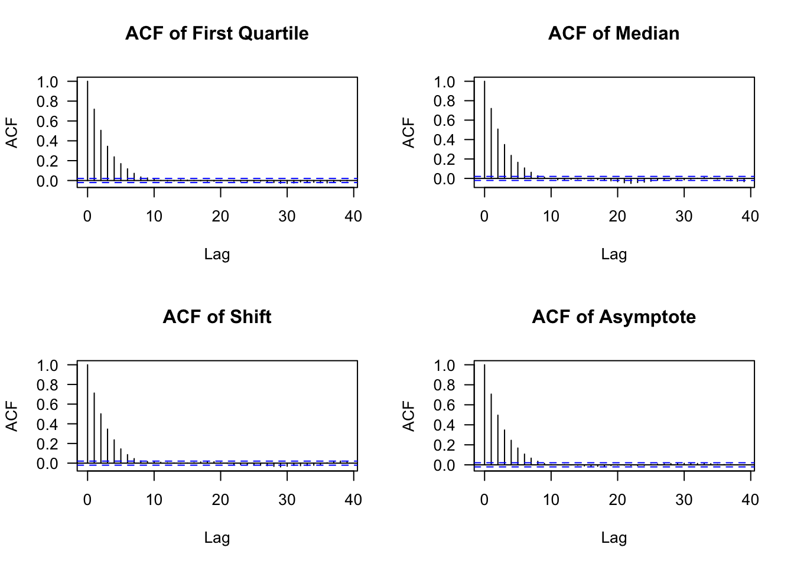
# plot the scatterplot with the median and first quartile
plot(out_sim_10k_MSH6_newPrior2MP$combined_chains$median_results, out_sim_10k_MSH6_newPrior2MP$combined_chains$first_quartile_results, xlim = c(1,100), ylim = c(1,100))
abline(a=0, b=1, col="red") # This draws a red line with slope 1 passing through the origin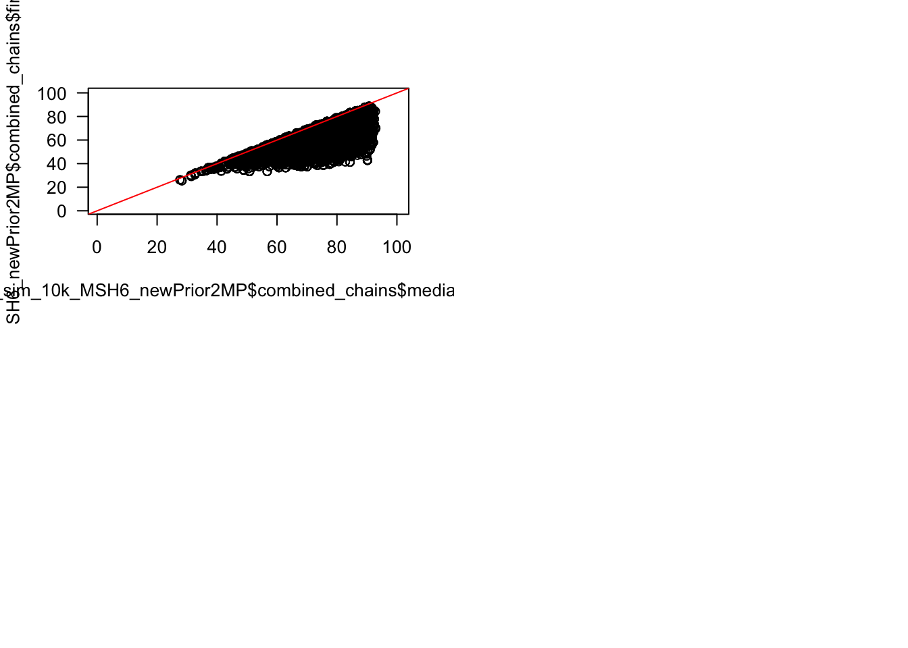
5. Simulation - BRCA1 and Breast Cancer - Additional families
1. Updated Prior
2. Larger pedigree file with 120 families instead of 60 from the first simulation # Load the additonal families
load("/Users/nicolaskubista/Documents/Master Statistics/Master Thesis/Code/peelingpearingestim/simFamilies_C_1000_nocen_selected300.RData")
dat<- simFamilies_C_1000_nocen_selected300
# print the description of the families
print(describeFamilies(dat,"Breast","BRCA1"))[1] "Number of families: 120"
[1] "Total Individuals: 3349"
[1] "Average family size: 27.9083333333333"
[1] "Summary of family sizes"
Min. 1st Qu. Median Mean 3rd Qu. Max.
22.00 25.00 26.00 27.91 30.25 46.00
[1] "Summary of Current Age for all family members"
Min. 1st Qu. Median Mean 3rd Qu. Max.
94 94 94 94 94 94
[1] "Summary of Current Age for probands"
Min. 1st Qu. Median Mean 3rd Qu. Max.
94 94 94 94 94 94
[1] "Number of families with affected individuals (Breast): 120"
[1] "Number of families with affected probands (Breast): 99"
[1] "Number of families with affected female probands (Breast): 99"
[1] "Number of families with relatives with PV (and not the proband) (BRCA1): 0"
[1] "Number of probands with PV (BRCA1): 120"
[1] "Number of female probands with PV (BRCA1): 120"
[1] "Number of individuals with PV (BRCA1): 99"
[1] "Summary of Cancer Age of (female) probands"
Min. 1st Qu. Median Mean 3rd Qu. Max.
28.00 52.75 69.50 67.55 82.75 94.00
[1] "Summary of Cancer Age in affected (non-proband) individuals"
Min. 1st Qu. Median Mean 3rd Qu. Max.
22.00 49.00 60.00 60.84 73.00 94.00
[1] "Summary of Cancer Age in affected (non-proband) female individuals"
Min. 1st Qu. Median Mean 3rd Qu. Max.
28.00 49.50 62.00 61.94 74.00 89.00
Min. 1st Qu. Median Mean 3rd Qu. Max.
28.00 49.50 62.00 61.94 74.00 89.00 # Data Prep
for (i in seq_along(dat)) {
if ("ID" %in% colnames(dat[[i]])) {
colnames(dat[[i]])[colnames(dat[[i]]) == "PedigreeID"] <- "FamilyID"
}
}
# Data Prep
for (i in seq_along(dat)) {
if ("ID" %in% colnames(dat[[i]])) {
colnames(dat[[i]])[colnames(dat[[i]]) == "ID"] <- "SubjectID"
}
}
for (i in seq_along(dat)) {
# Add a new column "PedigreeID" with the list number
dat[[i]]$PedigreeID <- i
}
# Exploring different priors
prior_params_BRCA1 <- list(
asymptote = list(g1 = 9, g2 = 1),
shift = list(min = 15, max = 25),
median = list(m1 = 6, m2 = 3),
first_quartile = list(q1 = 6, q2 = 3)
)
# Run Estimation procedure with default prior setting
out_sim_10k_simC300 <- PenEstim(
data = dat,
cancer_type = "Breast", gene_input = "BRCA1", n_chains = 4, n_iter_per_chain = 10000,
prior_params = prior_params_91, af = 0.9, burn_in = 0.1
)Rejection rates: 0.8947 0.8978 0.8989 0.8969 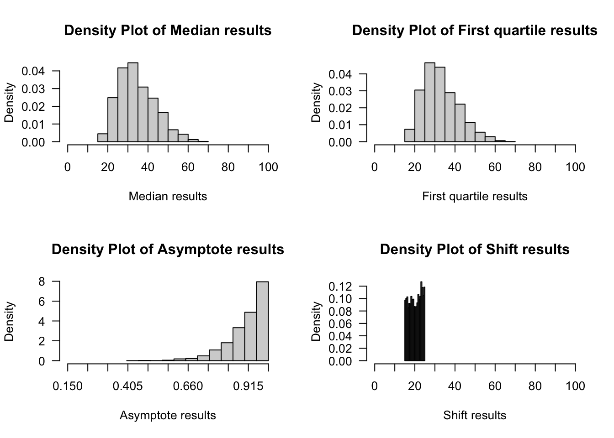
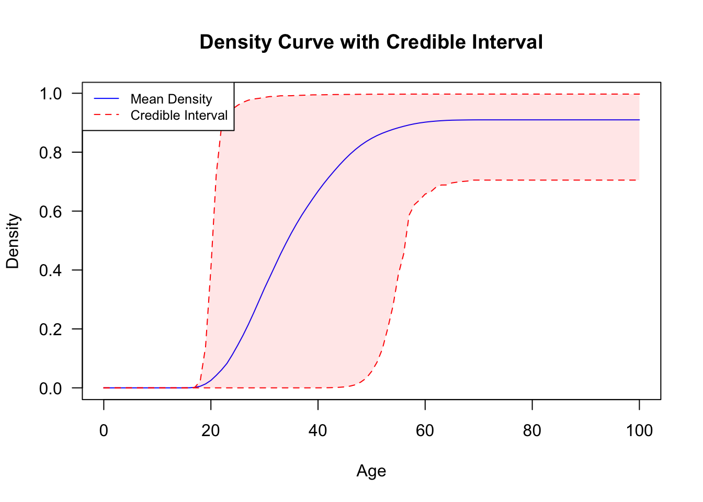
# print summary stats
out_sim_10k_simC300$summary_stats Median Shift First_Quartile Asymptote_Value
Min. :15.85 Min. :15.01 Min. :15.83 Min. :0.4371
1st Qu.:27.59 1st Qu.:17.65 1st Qu.:26.47 1st Qu.:0.8705
Median :33.37 Median :20.30 Median :31.51 Median :0.9331
Mean :34.60 Mean :20.17 Mean :32.98 Mean :0.9097
3rd Qu.:40.61 3rd Qu.:22.87 3rd Qu.:38.52 3rd Qu.:0.9717
Max. :67.41 Max. :25.00 Max. :66.31 Max. :1.0000 plot_traceSingle(out_sim_10k_simC300$results[[1]])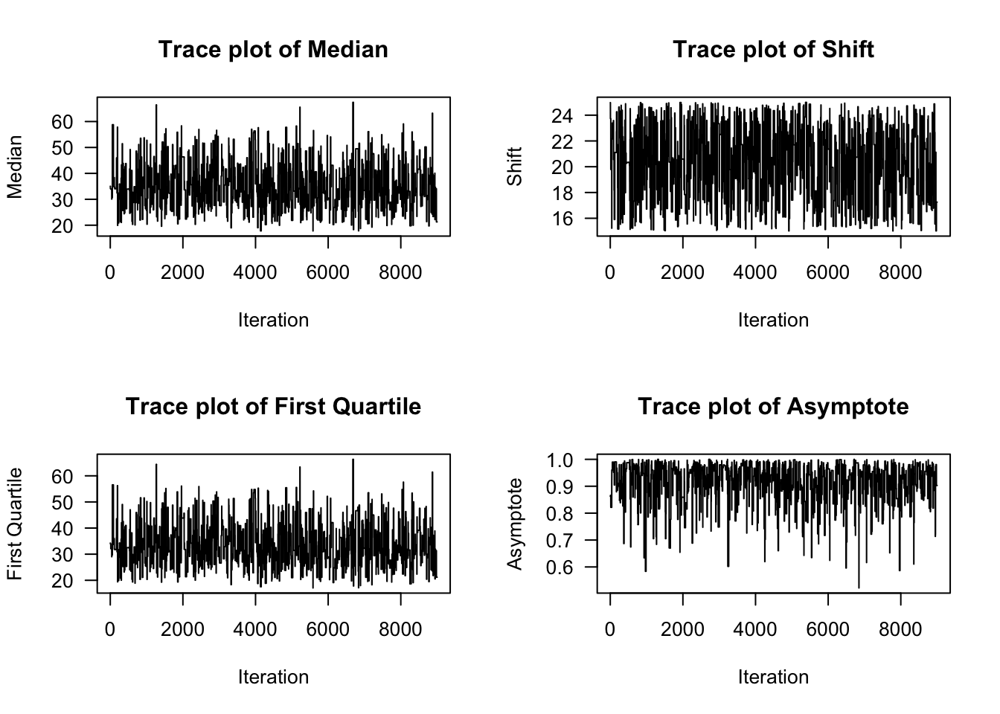
# Plot the running mean
runFQ<- running_mean(out_sim_10k_simC300$results[[1]]$first_quartile_samples)
runMed <- running_mean(out_sim_10k_simC300$results[[1]]$median_samples)
runShift <- running_mean(out_sim_10k_simC300$results[[1]]$shift_samples)
runAsy <- running_mean(out_sim_10k_simC300$results[[1]]$asymptote_samples)
# Plot running mean
plot(runFQ, type = "l", xlab = "Iteration", ylab = "Running Mean", main = "Running Mean of First Quartile Samples")
plot(runMed, type = "l", xlab = "Iteration", ylab = "Running Mean", main = "Running Mean of Median Samples")
plot(runShift, type = "l", xlab = "Iteration", ylab = "Running Mean", main = "Running Mean of Shift Samples")
plot(runAsy, type = "l", xlab = "Iteration", ylab = "Running Mean", main = "Running Mean of Asymptote Samples")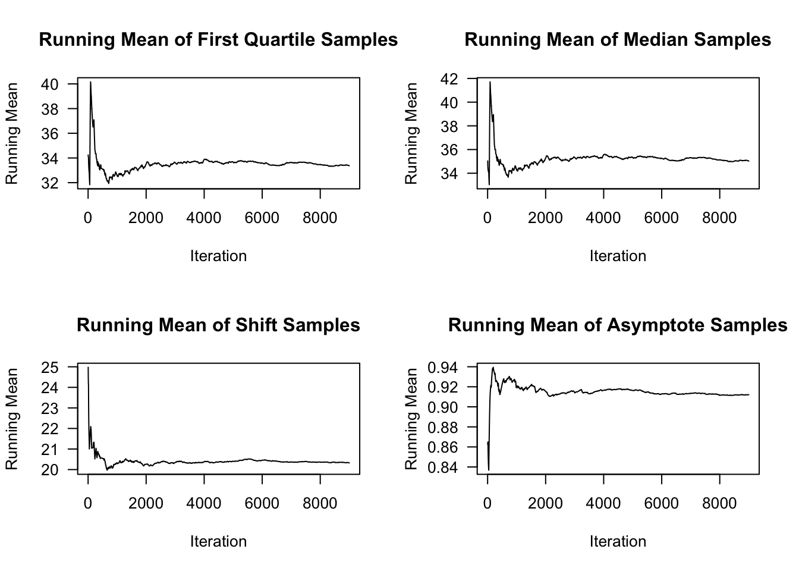
# Plot the running var
runVFQ<- running_variance(out_sim_10k_simC300$results[[1]]$first_quartile_samples)
runVMed <- running_variance(out_sim_10k_simC300$results[[1]]$median_samples)
runVShift <- running_variance(out_sim_10k_simC300$results[[1]]$shift_samples)
runVAsy <- running_variance(out_sim_10k_simC300$results[[1]]$asymptote_samples)
# Plot running var
plot(runVFQ, type = "l", xlab = "Iteration", ylab = "Running Mean", main = "Running Var of First Quartile Samples")
plot(runVMed, type = "l", xlab = "Iteration", ylab = "Running Mean", main = "Running Var of Median Samples")
plot(runVShift, type = "l", xlab = "Iteration", ylab = "Running Mean", main = "Running Var of Shift Samples")
plot(runVAsy, type = "l", xlab = "Iteration", ylab = "Running Mean", main = "Running Var of Asymptote Samples")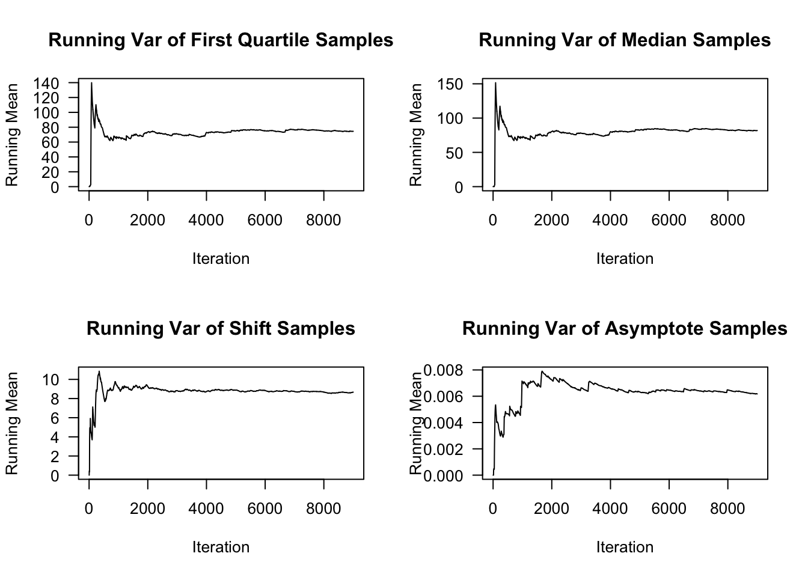
# Autocorrelation plots
acf(out_sim_10k_simC300$results[[1]]$first_quartile_samples, main = "ACF of First Quartile")
acf(out_sim_10k_simC300$results[[1]]$median_samples, main = "ACF of Median")
acf(out_sim_10k_simC300$results[[1]]$shift_samples, main = "ACF of Shift")
acf(out_sim_10k_simC300$results[[1]]$asymptote_samples, main = "ACF of Asymptote")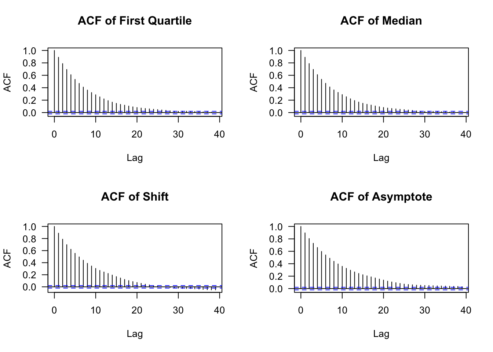
# plot the scatterplot with the median and first quartile
plot(out_sim_10k_simC300$combined_chains$median_results, out_sim_10k_simC300$combined_chains$first_quartile_results, xlim = c(1,100), ylim = c(1,100))
abline(a=0, b=1, col="red") # This draws a red line with slope 1 passing through the origin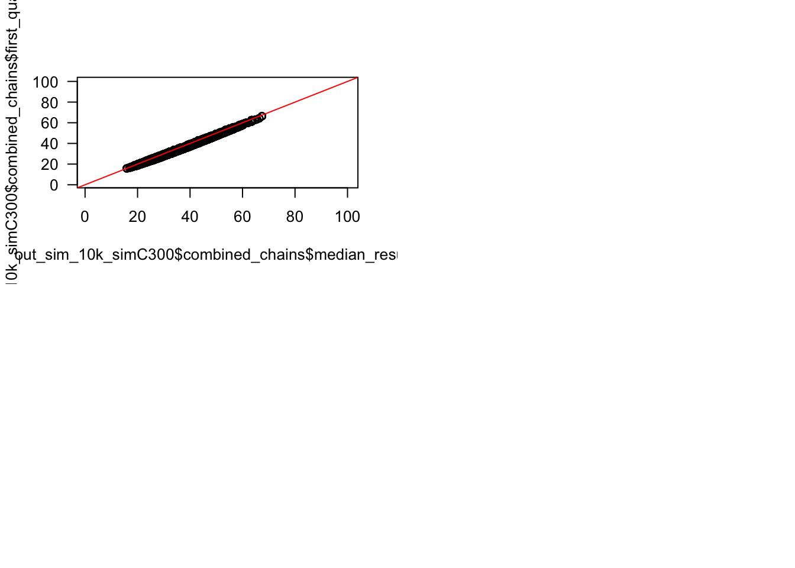